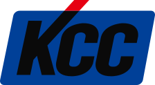
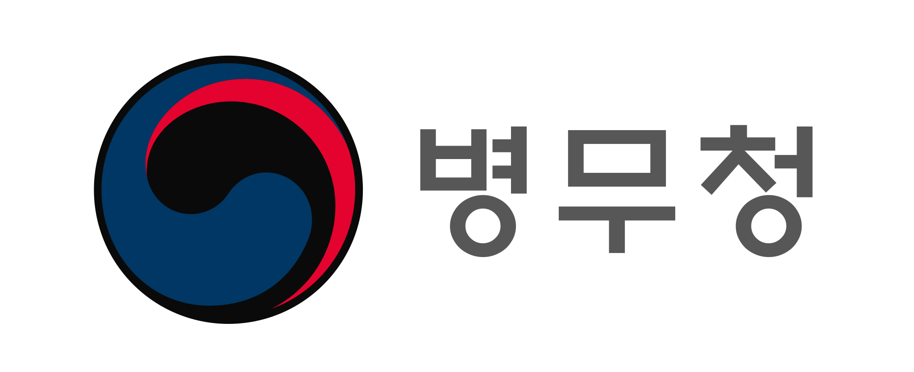

Business Ontology
업무 개념, 관계, 규칙, 예외, 프로세스를 AI가 이해할 수 있는 구조로 모델링합니다.
수학적 구조화와 컴퓨터과학적 시스템 설계를 기반으로, 조직의 업무 지식·규칙·프로세스를 온톨로지로 모델링하고 AI Agent와 자동화 워크플로우로 구현합니다.
공공기관, 대기업, 금융, 유통, 교육, IT/SaaS, 오프라인 서비스 현장에서 AI 교육·AX 컨설팅·자동화 구축·프로젝트 코칭 경험을 쌓아왔습니다.





일부 레퍼런스는 팀 멤버 개인의 강의, 컨설팅, 코칭, 프로젝트 참여, 운영 경험을 포함합니다.
우리는 AI 도구를 연결하는 데서 멈추지 않습니다. 업무 지식을 구조화하고, Agent가 판단할 수 있는 구조를 설계하며, 자동화 워크플로우와 내부 업무도구로 구현합니다.
업무 개념, 관계, 규칙, 예외, 프로세스를 AI가 이해할 수 있는 구조로 모델링합니다.
업무 온톨로지를 기반으로 역할별 AI Agent와 실행 구조를 설계합니다.
Make, n8n, Dify, API 등을 활용해 반복 업무 흐름을 자동화합니다.
자동화만으로 부족한 경우, 실제 사용할 수 있는 내부 업무도구와 MVP를 개발합니다.
구성원이 실제로 이해하고 사용할 수 있도록 수준별 교육과 정착 프로그램을 설계합니다.
진단부터 온톨로지 설계, Agent 구축, 자동화 워크플로우, 내부 도구, 그리고 조직 정착 교육까지 — 단계가 끊기지 않도록 한 팀이 책임집니다.
흩어진 문서, 규정, 노하우, 반복 업무를 하나의 업무지식 구조로 정리하고, AI Agent가 이를 검색·판단·작성·실행할 수 있도록 시스템화합니다.
조직 안에 흩어진 문서, 규정, 매뉴얼, 회의록, 상담기록, 업무 노하우를 수집합니다.
업무 개념, 관계, 규칙, 예외, 프로세스를 구조화해 AI가 참조할 수 있는 지식 체계를 만듭니다.
업무 역할별 Agent를 설계합니다. Agent는 단순 답변을 넘어 검색·판단·작성·실행을 지원합니다.
Agent 결과를 실제 업무 시스템과 연결합니다. Make, n8n, Dify, API, Claude Code 등을 활용합니다.
보고서 작성, 고객 응대, 콘텐츠 발행, 회의록 정리, 알림, 승인 등 실제 업무 실행으로 연결합니다.
AI 자동화의 핵심은 도구 연결이 아니라 업무 지식의 구조화입니다. 복잡한 업무를 개념·관계·규칙·예외·프로세스로 분해하고, 이를 AI Agent와 자동화 워크플로우가 활용할 수 있는 실행 구조로 구현합니다.
업무를 관찰합니다.
업무를 작은 단위로 분해합니다.
업무 지식을 모델링합니다.
Agent와 자동화 구조를 설계합니다.
실제 시스템을 구축합니다.
조직 안에 정착시킵니다.
업종별 템플릿을 파는 것이 아니라, 각 조직의 업무 구조에 맞는 AI 시스템을 설계합니다.
대기업·중견기업의 반복 업무와 팀 단위 프로세스를 자동화합니다.
공공기관의 문서, 지침, 보고, 회의, 데이터 업무를 AI 기반으로 재설계합니다.
영업·마케팅 업무를 AI 기반 콘텐츠·제안·고객응대 시스템으로 전환합니다.
조직의 지식 자산과 학습 운영을 시스템화합니다. 대기업 임직원 교육, 연구기관 지식 관리, 교육기관 운영까지 포함합니다.
오프라인 매장과 서비스 현장의 운영 경험을 바탕으로 현장형 AI 도입을 설계합니다.
여러 업무 도메인이 얽힌 복합 프로젝트를 한 팀이 끝까지 책임집니다. 진단·온톨로지·Agent·자동화·내부 도구·정착 교육이 한 흐름으로 이어집니다.
시스템을 구축하는 것만으로는 조직이 바뀌지 않습니다. 구성원이 실제로 이해하고 사용할 수 있도록 입문 교육, 실무 워크숍, 관리자 교육, 임원급 AX 교육까지 설계합니다.
ChatGPT 기본 활용, 문서·보고서·콘텐츠 작성
업무 자동화, Agent 실습, 데이터 기반 의사결정
팀 단위 자동화 과제 발굴과 업무 프로세스 개선
AX 전략, AI 도입 방향, 리더 업무 활용, 의사결정 보조
Claude Code, Dify, n8n, 바이브코딩, MVP 개발
하나의 기술을 여러 사람이 가르치는 팀이 아닙니다. 업무 분석, 온톨로지, 시스템 설계, 자동화 구현, 교육 정착, 현장 검증까지 각 분야 전문가가 함께 수행하는 AI 전환 프로젝트 팀입니다.
기업 AX와 Agent 자동화 시스템 아키텍처를 설계합니다.
고객의 업무 문제를 AI 전환 과제로 구조화합니다.
교육과정과 조직 정착 프로그램을 설계합니다.
현장 운영과 고객경험 관점에서 실행 가능성을 검증합니다.
자동화 워크플로우와 실무형 MVP를 구현합니다.
업무 지식과 도메인 개념을 온톨로지로 모델링합니다.
조직의 상황과 목적에 맞게 진단, 설계, 구축, 교육·정착까지 단계적으로 참여합니다.
조직의 반복 업무와 자동화 가능성을 진단합니다.
업무 지식과 프로세스를 AI가 활용 가능한 구조로 모델링합니다.
실제 업무를 수행하는 Agent와 자동화 워크플로우를 구축합니다.
초보자부터 임원까지 조직 수준별 교육과 정착을 지원합니다.
반복되는 업무, 흩어진 문서, 사람에게만 의존하는 노하우를 AI Agent가 활용할 수 있는 구조로 바꾸고 싶다면 함께 설계해보세요. 문제정의부터 업무 온톨로지 설계, Agent 자동화 시스템 구축, 교육과 조직 정착까지 함께합니다.